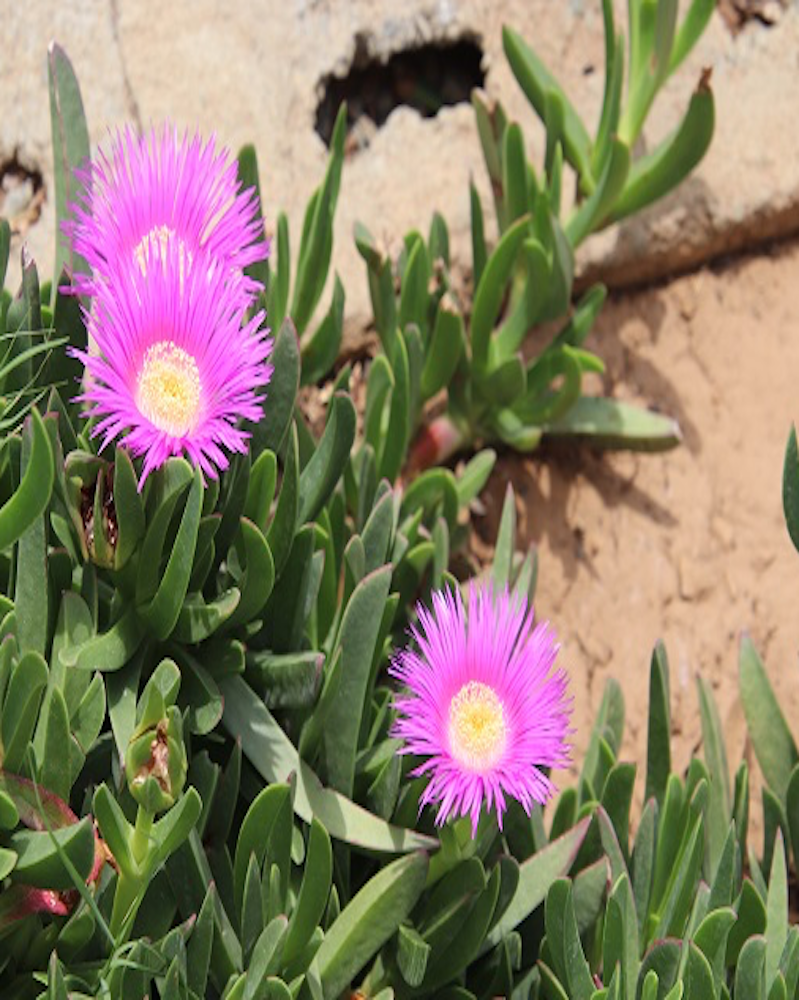

daar bo by die hoogwaterlyn
waar sand teen die kreupelhout duin
en vet vygies gedy in fel sonskyn
kniel ’n knoetsige dryfhout soos die "Dagga-roker" van, van Wouw
voor ’n koeël ronde spoelklip met ’n strepie wat om sy middellyn vou
digby 'n skulp so half verskuil onder die sand
met spring-gety en die ruising van die see, in sy spiraal daar gestrand
en so word ek onwillekeurigheid gelei om wiskundige dimensies te formuleer
betekenis en doel op my omgewing te projekteer
en met duisend gedagtes wat malend opkom
oor die skulp, die see en die pers fygblom
en met al die ander objekte wat ek om my beskou
het ek skielik die Buddha se "les sonder woorde" onthou
daar langs die dryfhout, skulp en klip, in fetale posisie gekrul
het ek met die reuk van see en sand, my longe diep gevul
wyl die raas van die branders om my verstil en tydelik van gedagtes verlos —
ek, net 'n opdrifsel, 'n houtjie wat kniel,in die eindeloosheid van die kosmos